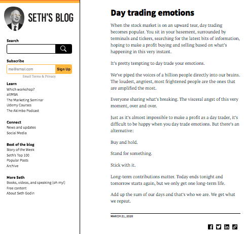

Mar 14, 2021
Emotional market or stick market
Seth, it seems like the life or this world is like an emotional market we spend our days buying and selling emotional stocks using the trading strategy that we think deserves our worldview. Each of us has his or her own strategy and Because we are constantly guessing the emotional portfolio of others, we end up organized in tribes by following those we think are holding the portfolio which is like the one we hold or said in another way those that have the same risk profile as us.

This is again as you know the effect of this strange behavior that wants us to feel safer if we know that others are running the same risk as us and the higher the number of persons we see as being like us, running the same risk, the safer and safer we feel. But all of these are simply emotions onto which we attach value given the status we seek. Of course, sticking to the same strategy has proven to be a good strategy in the stock market, and sticking to the practice of chipping is a good one also like publishing every day a blog article like this one.
PS: Structured finance may help us understand better how to structure emotions. Who knows?